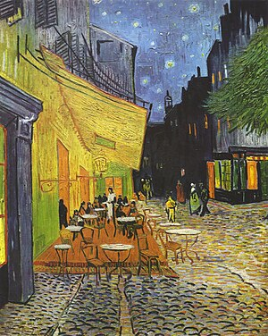
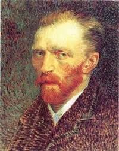
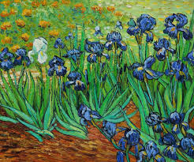
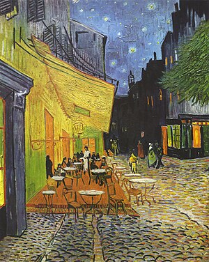
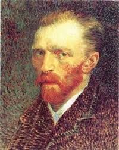
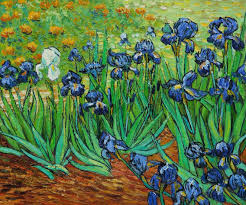

Bem-vindo ao site dedicado a um dos maiores artistas da história!

 





Clique nas imagens para saber mais.
Uma das obras mais famosas de Van Gogh, pintada em 1889.
Esta série de pinturas foi criada entre 1888 e 1889 e é um ícone da arte pós-impressionista.
Pintado em 1888, retrata um café em Arles, destacando as cores vibrantes e a atmosfera única.
Van Gogh pintou vários auto-retratos, explorando sua identidade e estado emocional.
Uma das obras mais conhecidas, pintada em 1889, durante sua estadia no asilo de Saint-Rémy.